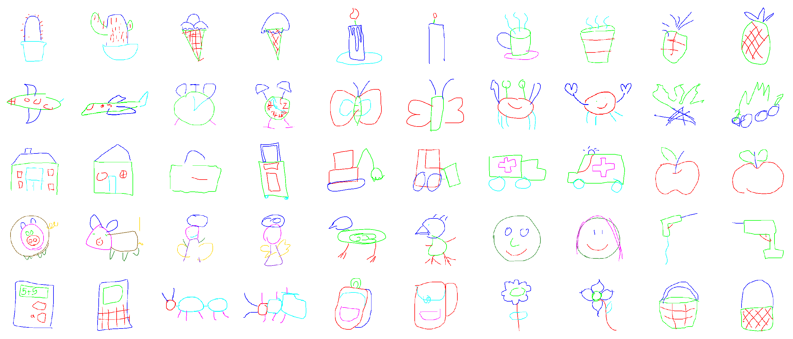

Understand how seeing can be explained by drawing.


Sketch-a-Net: trained model (MatConvNet)
Sketch Me that Shoe: trained triplet model (Caffe)
Free-hand sketch synthesis with deformable stroke models: code (Matlab)
Fine-grained sketch-based image retrieval by matching DPM: code (Matlab)
WordPress Theme : AccessPress Lite

SlowSketch (*NEW*)
AmateurSketch-3DChair (*NEW*)

ProSketch-3DChair (*NEW*)


Fine-Grained SBIR Datasets (v2 released!!)


